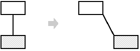
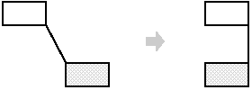
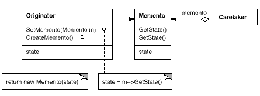
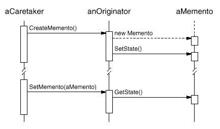

class State;
class Originator {
public:
Memento* CreateMemento();
void SetMemento(const Memento*);
// ...
private:
State* _state; // internal data structures
// ...
};
class Memento {
public:
// narrow public interface
virtual ~Memento();
private:
// private members accessible only to Originator
friend class Originator;
Memento();
void SetState(State*);
State* GetState();
// ...
private:
State* _state;
// ...
};

class Graphic;
// base class for graphical objects in the graphical editor
class MoveCommand {
public:
MoveCommand(Graphic* target, const Point& delta);
void Execute();
void Unexecute();
private:
ConstraintSolverMemento* _state;
Point _delta;
Graphic* _target;
};
class ConstraintSolver {
public:
static ConstraintSolver* Instance();
void Solve();
void AddConstraint(
Graphic* startConnection, Graphic* endConnection
);
void RemoveConstraint(
Graphic* startConnection, Graphic* endConnection
);
ConstraintSolverMemento* CreateMemento();
void SetMemento(ConstraintSolverMemento*);
private:
// nontrivial state and operations for enforcing
// connectivity semantics
};
class ConstraintSolverMemento {
public:
virtual ~ConstraintSolverMemento();
private:
friend class ConstraintSolver;
ConstraintSolverMemento();
// private constraint solver state
};
void MoveCommand::Execute () {
ConstraintSolver* solver = ConstraintSolver::Instance();
_state = solver->CreateMemento(); // create a memento
_target->Move(_delta);
solver->Solve();
}
void MoveCommand::Unexecute () {
ConstraintSolver* solver = ConstraintSolver::Instance();
_target->Move(-_delta);
solver->SetMemento(_state); // restore solver state
solver->Solve();
}

template <class Item>
class Collection {
public:
Collection();
IterationState* CreateInitialState();
void Next(IterationState*);
bool IsDone(const IterationState*) const;
Item CurrentItem(const IterationState*) const;
IterationState* Copy(const IterationState*) const;
void Append(const Item&);
void Remove(const Item&);
// ...
};
class ItemType {
public:
void Process();
// ...
};
Collection<ItemType*> aCollection;
IterationState* state;
state = aCollection.CreateInitialState();
while (!aCollection.IsDone(state)) {
aCollection.CurrentItem(state)->Process();
aCollection.Next(state);
}
delete state;